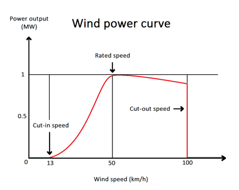
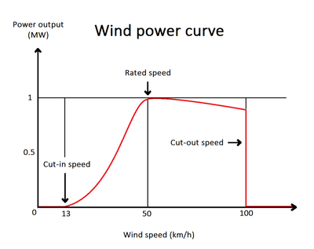

SOLAR POWER __TO__ ELECTRICAL POWER
SOLAR POWER GENERATION:
.png)
fig.no: 1 Block diagram of solar energy conversion.
Solar radiation is light – also known as electromagnetic radiation – that is emitted by the sun. While every location on Earth receives some sunlight over a year, the amount of solar radiation that reaches any one spot on the Earth’s surface varies. Solar technologies capture this radiation and turn it into useful forms of energy.
There are two main types of solar energy technologies—photovoltaics (PV) and concentrating solar-thermal power (CSP).
PHOTOVOLTAICS:
Standard photovoltaic solar panels are the most efficient application of photovoltaics. However, photovoltaic glass allows generation from surfaces like building windows that were previously incapable of anything but passive solar energy and also enables other options, like color choices. Other technologies include low-tech solar heaters created from recycled cans that provide an inexpensive source of heat.
CONCENTRATED SOLAR POWER:
Concentrated solar power uses multiple lenses or reflectors to collect more of the sun’s thermal energy. Thermal energy collected through the day is typically applied to oil or molten salts that retain heat to boil water for steam turbine generators throughout the night.
SOLAR CELL:
A solar cell, or photovoltaic cell is a form of photoelectric cell, defined as a device whose electrical characteristics, such as current, voltage, or resistance, vary when exposed to light. Individual solar cell devices are often the electrical building blocks of photovoltaic modules, known colloquially as solar panels. The common single junction silicon solar cell can produce a maximum open-circuit voltage of approximately 0.5 to 0.6 volts. Some of them are:
| Solar Cell Type | Efficiency Rate | Advantages | Disadvantages |
|---|---|---|---|
| Monocrystalline Solar Panels (Mono-SI) | ~20% | High efficiency rate; optimised for commercial use; high life-time value | Expensive |
| Polycrystalline Solar Panels (p-Si) | ~15% | Lower price | Sensitive to high temperatures; lower lifespan & slightly less space efficiency |
| Thin-Film: Amorphous Silicon Solar Panels (A-SI) | ~7-10% | Relatively low costs; easy to produce & flexible | shorter warranties & lifespan |
SOLAR ENERGY - ELECTRICITY GENERATION:
Step 1: Solar Panels Capture Solar Energy:
When sunlight hits the thin layer of semiconductive material, it triggers the release of electrons from silicon atoms. The negatively charged electrons are then attracted to the positively charged side of the cell. This “photovoltaic effect” forms as a result of the free-flowing electrons within the solar panel. The moving electrons create an electric current which is then harnessed by the wiring connected to the solar panels to produce electricity.
Step 2: Solar Inverters Convert DC to AC:
Solar panels produce electricity in the form of direct current (DC), which means the electricity only flows in one direction. However, your home appliances use alternating current (AC) electricity, which means the electricity flows in both directions.
It’s a simple job, but an essential one if you want to take advantage of solar energy. Without the inverter, your system would create electricity, but it wouldn’t be able to power anything.
Solar inverters also allow you to connect your solar panel system to the internet so you can access information about your system’s performance. This helps you compare your solar energy production and your household energy consumption so you can check if the system is functioning properly and meeting your electrical load as required.
Step 3: Electrical Panel Distributes Electricity:
Your electrical panel distributes electricity throughout your home. The circuit breakers in the electrical panel can also cut off the flow of current to an electrical circuit in case a fault or surge occurs, to prevent overload in electrical lines that can cause damage.
While your solar panels generate electricity, they typically aren’t connected directly to your appliances or other electronic devices. In terms of understanding how do solar panels work, they provide electricity to the electrical panel, and your electrical panel separates that home solar power into individual circuits that
run to everything in the house.
Step 4: Electric Meter Records Consumption and Production:
Your electric meter (sometimes called the “utility meter”) is the device your utility company uses to measure your electricity consumption. It’s how they know what to bill you each month. A traditional electric meter has analog dials that spin as current flows through it, which is why the utility company has someone check your meter in person once a month. Even then, that meter reading is just a summary of your electricity consumption for the month.
Smart Meters and Net Metering will record energy production in addition to consumption, and when you generate more energy than you need for your home, you can export that power to the grid and earn credits that can help reduce future electric bills.
Step 5: Batteries Store Excess Energy:
Installing solar battery storage is essential to maximizing the long-term benefits of going solar. If your solar panels generate more solar energy than you can use, you can store that extra electricity in a solar battery. That way, you have electricity available to you when the sun goes down or it’s a rainy day - instead of drawing from the electricity grid.
Depending on the type, solar batteries can either store excess DC electricity that’s produced by your solar panels, or they can be charged by AC electricity that’s already been converted by your inverter.
SAMPLE OF SOLAR POWER GENERATION
Here is a sample video of flow of things in Solar power genration.
 
